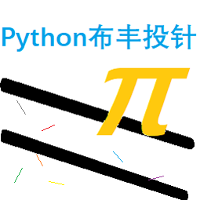

布丰投针：证明与算法#

作者：樊圃
0x00：证明#
0b00：背景#
法国数学家布丰（1707-1788）最早设计了投针试验. 这一实验的步骤是:
取一张白纸, 在上面画上许多条间距为a的平行线.
取一根长度为 \(l(l \le a)\) 的, 随机地向画有平行直线的纸上掷 \(n\)次, 观察针与直线相交的次数, 记为 \(i\).
计算针与直线相交的概率.
“投针问题” 记载于布丰1777年出版的著作中: “在平面上画有一组间距为 \(a\) 的平行线, 将一根长度为 \(l(l \le a)\) 的针任意掷在这个平面上, 求此针与平行线中任一条相交的概率. “
这里, 我们取 \(l=1, a=2\).
0b01：证明#
我们只考虑一根线的情况.
（想知道它为什么可以等价与无穷多根平行线, 就自己证明. ）
针的一端到线的距离 \(y\) 的取值范围是 \((-1, 1\,]\) ,
针与线的夹角 \(\theta\) 的取值范围是 \([\,0, 2\pi)\) .
考虑样本空间 \(\mathbf{S}=\{\text{每一根可能的针}\}\) , 随机变量
不难看出, 当 \(y - \sin\theta \le 0\) 时, \(X=1\).
因此, 当 \(\theta=t_0\) 时, \(X=1 \iff |y|<|\sin t_0|\).
故 \({X=1}\) 在 \((\theta, y)\) 坐标系中的图形是 \(y=\sin \theta\) 与 \(\theta\) 轴围成的图形.
这个图形的面积是：
而整个样本空间 \(\mathbf{S}\) 的面积为 \(2 \times 2\pi = 4\pi\), 所以投中概率为 \(\cfrac{4}{4\pi}=\cfrac{1}{\pi}\), \(X \sim B(1, \cfrac{1}{\pi})\), 所以当投针次数 \(n\) 变大时, \(n/i\) 不断接近 \(\pi\). （根据棣莫弗－拉普拉斯定理. ）
0x01：算法#
在讲算法时应声明，布丰投针的模拟中是可以用到 \(\pi\) 表示 \(\theta\) 的，因为现实中的角度并不涉及 \(\pi\)，这里使用是为了 \(\sin\) 函数的计算需要。
事实上，存在这样的随机算法，使得结果 \(\Delta y = \sin\theta\) 在 -1 与 1 之间且 \(D=\Delta y\) 的概率密度正确， 但是一般来说这是没有必要的。
以下算法测试时的 CPU 占用均为约 9%。
- 测试软件：
Python 3.10;
Windows 10;
- 测试硬件：
Intel(R) Core(TM) i5-10400 CPU @ 2.90GHz
0b00：Python 算法#
纯 Python 实现的算法，使用
math
模块的 sin(), radians() 函数和 pi。
不需要任何第三方包，原生 Python 即可实现。
速度慢，测试时投针 1 亿次需四十余秒。
0b01：Numpy 算法#
速度快，测试时投针 1 亿次仅需 3.2 秒左右。
需要安装 Numpy；内存占用大，上述速度需要 23MB 内存。 优化前内存占用甚至是其 10 倍。
用 Python 的第三方包 Numpy 实现的算法。
1import numpy as np
2
3rng = np.random.default_rng()
4
5def th(x=100_0000): # 1*10^8 needles, 9% of i5 cpu: 3.2s, ~23MB memory
6 y_arr = rng.uniform(0., 2., (x,))
7 dy_arr = np.sin(rng.uniform(0., np.pi, (x,)))
8 b_arr = (y_arr - dy_arr) <= 0
9 return x, np.sum(b_arr, dtype='i8')
使用：
>>> n = i = 0
>>> dn, di = th()
>>> n += dn
>>> i += di
>>> print(n, i, n/i) # possible result
1000000 318232 3.142361547550215
作者曾经（没事闲的）使用此算法进行几小时的实验，总计 8192 亿 根针，投中 2607,5985,1100 根，计算结果与 \(\pi\) 真值相差 0.00015%（比真值小），而数学上预期误差应在约 0.00034% 内。目前看来不错， 但模拟过程会有计算机浮点误差，不可避免。
未来，我打算将 Numpy 算法加入主程序。